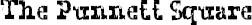

IF I HAVE children, there’s a one-in-two chance that I will pass on the defective gene to them. That doesn’t mean they’ll look like August, but they’ll carry the gene that got double-dosed in August and helped make him the way he is. If I marry someone who has the same defective gene, there’s a one-in-two chance that our kids will carry the gene and look totally normal, a one-in-four chance that our kids will not carry the gene at all, and a one-in-four chance that our kids will look like August.
If August has children with someone who doesn’t have a trace of the gene, there’s a 100 percent probability that their kids will inherit the gene, but a zero percent chance that their kids will have a double dose of it, like August. Which means they’ll carry the gene no matter what, but they could look totally normal. If he marries someone who has the gene, their kids will have the same odds as my kids.
This only explains the part of August that’s explainable. There’s that other part of his genetic makeup that’s not inherited but just incredibly bad luck.
Countless doctors have drawn little tic-tac-toe grids for my parents over the years to try to explain the genetic lottery to them. Geneticists use these Punnett squares to determine inheritance, recessive and dominant genes, probabilities and chance. But for all they know, there’s more they don’t know. They can try to forecast the odds, but they can’t guarantee them. They use terms like “germline mosaicism,” “chromosome rearrangement,” or “delayed mutation” to explain why their science is not an exact science. I actually like how doctors talk. I like the sound of science. I like how words you don’t understand explain things you can’t understand. There are countless people under words like “germline mosaicism,” “chromosome rearrangement,” or “delayed mutation.” Countless babies who’ll never be born, like mine.